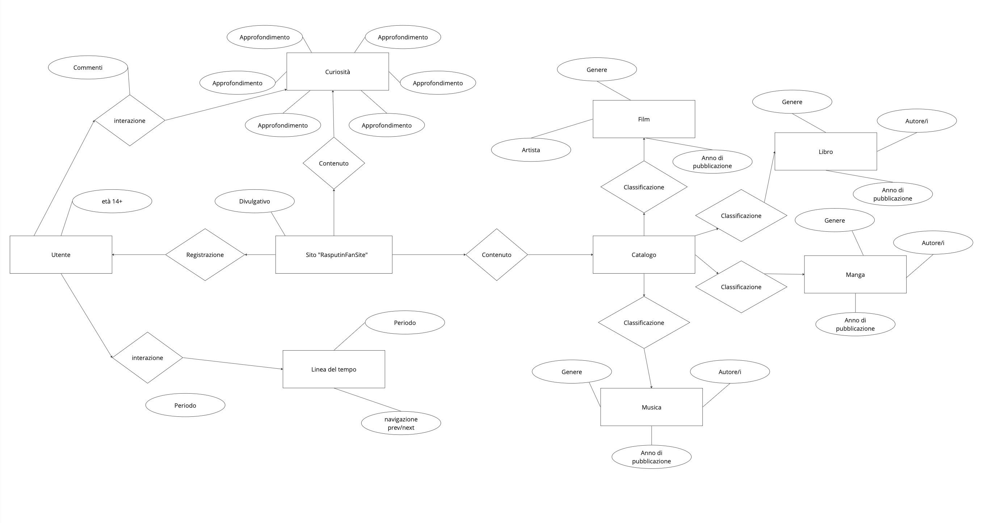

Il sito RasputinFanSite o РаспутинФансите ha come obiettivo quello di far conoscere non solo la storia di Rasputin ma anche come è stato raccontato e soprattutto in che modo il suo personaggio fino ad oggi è stato utilizzato dai vari media per raccontare altre storie. Il risultato potrebbe interessare non solo gli appassionati di storia ma anche chi grazie alla musica potrebbe avvicinarsi ad un personaggio così tanto particolare.
Il sito non ha un target specifico perché è designato per poter soddisfare un range molto ampio di persone sia adulti sia persone molto giovani grazie a contenuti più accattivanti.
Poiché il target non è preciso si deve optare per garantire l’accesso alla risorsa tramite i vari device come tablet, smartphone e ovviamente anche la versione desktop per pc.
Per cui è necessario realizzare un'interfaccia responsive affinché il sito sia fruibile in maniera corretta con qualsiasi dispositivo.
Per quanto riguarda i contenuti si ricorre ad un'integrazione dei media: sono presenti testi, immagini e video.
ALe immagini comprendono sia il personaggio che anche altri personaggi storici importanti tra la Prima guerra mondiale e la fine dello zarismo.
I video e i testi menzionati non riguardano solo Rasputin, ma si possono reputare di sua ispirazione, infatti, è un personaggio così importante che ha portato alla creazione di tantissimi contenuti.
Nel proseguire il progetto sarebbe necessario reperire quanti più media,libri,musica possibili man mano che escono nuovi prodotti su Rasputin, nel rispetto delle norme relative al copyright.
Si potrebbe arrivare a mostrare anche fonti storiche che rendano più chiaro il periodo storico di Rasputin e la Russia dell'epoca.
Sul web ad oggi non esiste un sito divulgativo che non racconti la solita storia raccontata sui libri di scuola,questo sito si dovrebbe intendere come un “ricettario” o catalogo di tutta la storia, i contenuti, le curiosità legato al personaggio di Rasputin.
n questo sito come nei loro video su YouTube cercano di snocciolare la maggior parte della questione in maniera approfondita ma anche sintetica.
Un sito che fornisce molti spunti utili per quanto riguarda i servizi e le possibilità di interazione offerte all'utente è YouTube. Dal famoso social il sito RasputinFanSite riprende:
Molto simile a Geopop come proposta, rispetto a quest’ultimo aggiunge solo la possibilità di poter ascoltare direttamente sul sito la lezione.
Wikipedia è conosciuto per essere un sito abbastanza affidabile per la lettura di contenuti di carattere storico,
ovviamente soffre di un problema legato alla stesura dei testi prolissa.
Come Wikipedia, è pregno di contenuti a livello di testo, ma come anche gli altri siti citati manca di qualsivoglia altro media.
In questo caso in controtendenza è formato di soli contenuti audiovisivi, come i vari video legati alle puntate su Rasputin.
Sono tutti siti diversi che offrono contenuti diversi, ma che risultano molto utili al mio progetto per potere creare un hub in cui incanalare tutti i vari contenuti che ci sono su Rasputin, così da avere una visione completa della persona e di ciò che ha ispirato.
Per la creazione della mappa sono stati presi in prestito alcuni elementi propri della modellazione concettuale. Quindi, le entità sono rappresentate da rettangoli, le relazioni da rombi e gli attributi da ellissi. Questi ultimi sono stati affiancati sia alle entità sia alle relazioni, per definirne meglio la tipologia.
Un esempio è legato alla relazione “interazione”. È presente il tipo navigazione, perché l'utente, scorrendo la linea del tempo, interagisce con il sito web e, allo stesso tempo, naviga tra gli elementi. L'utente interagisce e allo stesso naviga all'interno del contenuto del sito.
Si è cercato di costruire una mappa che fosse percorribile in tutte le direzioni. Per fare ciò sono stati utilizzati, come etichette per definire le relazioni tra le entità, dei sostantivi piuttosto che dei verbi.
Dalla home page, mediante i 2 link presenti nella navbar, è possibile raggiungere le altre due pagine che rappresentano il secondo livello del sito:
Nell'intestazione, a sinistra, sono presenti:
Subito sotto si trova il corpo, che contiene:
Nel piede di pagina, infine, sono presenti elementi legati alla metanavigazione come:
Attualmente, nella home page, manca un canale di navigazione secondaria. L'inserimento di un menu aggiuntivo nella barra di navigazione principale sta causando alcuni problemi, specialmente su smartphone.
Poiché gli utenti su dispositivi mobili utilizzano il dito anziché il mouse, la visualizzazione di un menu secondario richiede l'azione di toccare una delle tre etichette presenti nella barra di navigazione principale. Tuttavia, questo processo può risultare prolungato, poiché per passare da un menu secondario all'altro è necessario ripetere l'azione per visualizzare i vari menu. Questo potrebbe superare la pazienza media dell'utente su dispositivi mobili.
Inoltre, considerando lo spazio notevolmente ridotto dello schermo rispetto a una versione desktop, è essenziale prestare attenzione allo spazio disponibile per ciascun link. Una barra di navigazione affollata potrebbe causare errori nel toccare il link desiderato a causa delle dimensioni del polpastrello dell'utente.
Nel corpo della pagina persone si trova la stessa navbar, infatti cambia il colore del link in base a quello selezionato (Home,curiosita,media).
Nella sezione principale ci sono delle card contenenti degli approfondimenti.
Inoltre è possibile commentare le varie curiosità con le altre persone che hanno fatto l'accesso al sito.
Nella pagina media si trovano tutti i media presenti sul sito. Questi possono essere visualizzati in ordine alfabetico AZ oppure ZA. Inoltre, i risultati possono essere filtrati per categoria.
È stato utilizzato lo stesso sistema delle cards per poter visualizzare i vari media, con immagini e alcune informazioni fondamentali.
Infine c'è una barra di ricerca utile per trovare qualcosa in maniera più diretta, al suo interno c'è una funzione che permette senza aver premuto il pulsante di avere una ricerca basata sui caratteri digitati.
Nella prima sezione della pagina si trova il player che permette di visionare il media.
Sotto è permesso scrivere dei commenti per analizzare la opera in questione solamente dopo aver effettuato l'accesso come nel caso della pagina curiosità.
Per quanto riguarda la struttura dell'interfaccia, sono stati implementati diversi miglioramenti. Innanzitutto, è stata mantenuta la coerenza con le convenzioni comuni: il pulsante per aprire il menu di navigazione principale è posizionato in alto, seguendo la pratica tipica di molti siti per dispositivi mobili. Questa scelta facilita agli utenti la comprensione immediata di come accedere al sistema di navigazione principale, anche quando il menu non è visibile all'apertura della home.
Per quanto riguarda l'architettura in generale:
Alcuni altri aspetti rilevanti riguardano le pagine dedicate ai media e alle curiosità. In primo luogo, è stata presa la decisione di evitare l'implementazione di una paginazione tradizionale, optando invece per il caricamento automatico di nuovi risultati quando l'utente raggiunge il fondo della pagina.
Questa scelta è motivata dal fatto che la paginazione, soprattutto su dispositivi mobili, presenta alcune problematiche:Questa scelta, che può portare all'allungarsi smisurato della pagina, ha avuto come conseguenza l'inserimento di un bottone, sempre presente in basso a destra, che permette di tornare in cima alla pagina. In questo modo l'utente ha la possibilità di tornare immediatamente in cima, nel caso voglia modificare i filtri o utilizzare la navbar per navigare nel sito.
Il bottone è stato inserito nelle pagine che possono diventare molto lunghe, come:
L'inserimento del bottone è stato preferito al rendere i filtri sempre visibili, per una questione di spazio occupato su schermo.
Per questo stesso motivo, e per la presenza del bottone per tornare in cima, si è deciso di evitare la sticky navbar.
Per quanto riguarda il layout sono stati adottati i seguenti accorgimenti:
Per quanto riguarda la scrittura:
Visto le informazioni da veicolare erano tante, si è deciso di ricorrere alla strategia della rivelazione progressiva. Nella home, ad esempio, è presente una introduzione alla vita di rasputin, per cui si è deciso di agire con una linea del tempo, in cui si possa scorrere da un anno all'altro in base a ciò che si desidera sapere.
Le stesse card dei media presentano delle descrizioni estremamente brevi. Nelle pagina delle curiosità, invece, le descrizioni sono più lunghe e dettagliate.
Nella home, inoltre, è possibile visualizzare una lista di immagini di Rasputin ed i coniugi Romanov che fungono anche da link per spostarsi direttamente attraverso un bottone alla pagina delle curiosità che li riguardano.
Per quanto riguarda il wordcloud presente nella home, sarebbe interessante rendere tutte le parole presenti link che rimandano a pagine del sito inerenti.
Nel prototipo è stata implementata una versione molto semplificata dell'idea dei media. In uno sviluppo futuro sarebbe necessario implementare molti aspetti aggiuntivi:
Inoltre, andrebbe sviluppata l'integrazione con i social media, focalizzandosi sui seguenti aspetti:
Come editor si è utilizzato Visual Studio Code.